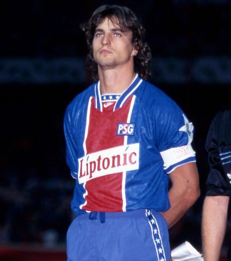

David Ginola est un ancien footballeur français, né le 25 janvier 1967 à Gassin en France.
Il joue avec le Paris Saint-Germain entre 1992 et 1995. Pendant son passage, il permet
au PSG de réaliser des performances mémorables en Europe et de s'affirmer sur le plan
national. Meneur de jeu et capitaine sous Luis Fernandez, Ginola mène le club à la
victoire sur un grands nombres de matchs car il est souvent titularisé. Il est alors un
membre phare du onze-type du PSG des années 90.
Sa qualité de passe et son
aisance balle au pied lui valent la reconnaissance des spectateurs qui l'acclament
pour ses prouesses dans la création du jeu parisien. Il est aussi très polyvalent,
pouvant jouer dans un poste offensif comme défensif.
Malgré une carrière
laborieuse en sélection nationale, ses succès en club lui permettent d'être reconnu
comme l'un des meilleurs latéraux droits de son époque.